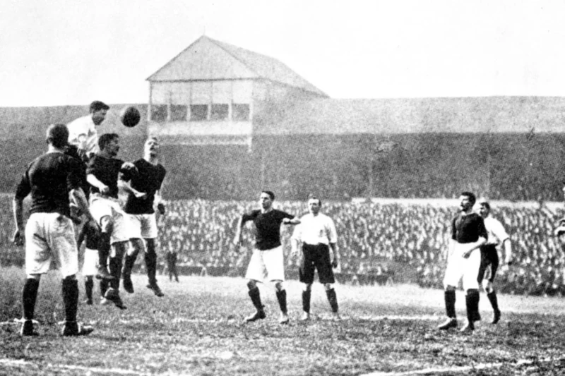
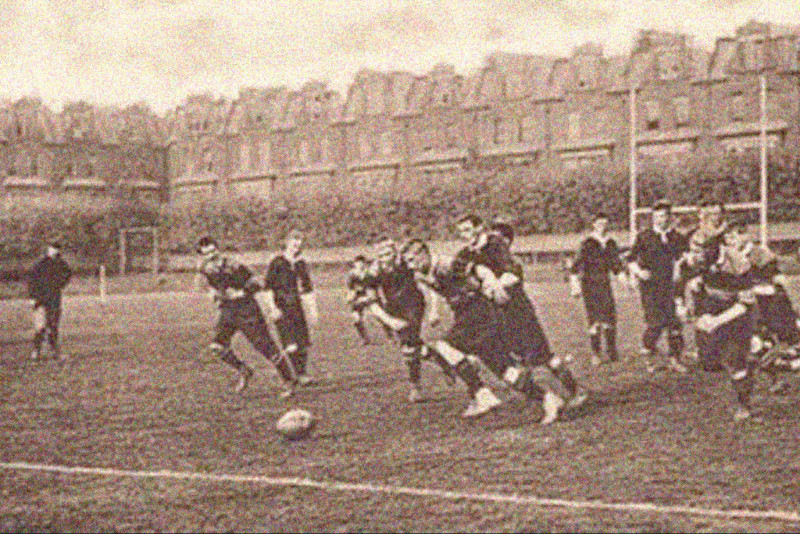

A Origem do Futebol
O futebol surgiu no século XIX na Inglaterra. Ele foi inspirado em jogos de bola praticados desde a antiguidade, mas foi na Inglaterra que o esporte ganhou regras próprias e se tornou popular.

O Futebol no Brasil
O futebol chegou ao Brasil no final do século XIX e rapidamente se popularizou. Aqui foram formados os primeiros clubes e campeonatos, e o esporte se tornou parte da cultura brasileira.

O Futebol Hoje
Atualmente, o futebol é o esporte mais popular do mundo, movimentando milhões de torcedores e grandes campeonatos.